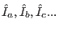

- 1
-
J. Jensen and A. R. Mackintosh,
Rare Earth Magnetism,
Clarendon Press Oxford (1991)
- 2
-
M. Rotter, M. Loewenhaupt, S. Kramp, T. Reif, N. M. Pyka, W. Schmidt and
R. v. d. Kamp,
“Anisotropic Magnetic Exchange in Orthorhombic RCu Compounds
(R=Rare Earth)“,
Compounds
(R=Rare Earth)“,
Europ. Phys. J. B 14 (2000) 29
- 3
-
S. Kirkpatrick, C. D. Gelatt and M. P. Vecchi,
Science 220 (1983) 671
- 4
-
K. W. Becker, P. Fulde and J. Keller,
“Line Width of crystal-field excitations in metallic rare-earth
systems“,
Z. Phys. B 28 (1977) 9
- 5
-
M. Loewenhaupt, R. Schedler, U. Witte, M. Rotter and W. Schmidt,
“Unconventional magnetic excitation in the Kondo lattice CeCu“,
Physica B 378-380 (2006) 775
- 6
-
R. Schedler, M. Rotter, U. Witte, M. Loewenhaupt and W. Schmidt,
“Field dependence of spin waves in the Kondo lattice CeCu“,
Acta Physica Polonica B 34 (2003) 1313
- 7
-
M. Rotter and A. T. Boothroyd,
“Going beyond the dipole approximation to improve the refinement of
magnetic structures by neutron diffraction“,
Phys. Rev. B 79 (2009) 140405(R)
- 8
-
Y. Yoshida, K. Sugiyama, T. Takeuchi, Y. Kimura, D. Aoki, M. Kouzaki,
R. Settai, K. Kindo and Y. Onuki,
“Metamagnetic Transition Based on the Quadrupole Moment in
DyCu“,
J. Phys. Soc. Jpn. 67 (1998) 1421
- 9
-
M. Doerr, M. Rotter, E. El Massalami, S. Sinning, H. Takeya and
M. Loewenhaupt,
“Magnetoelastic effects in ErNiBC single crystal: probing
the H-T phase diagram“,
J. Phys.: Cond Mat. 14 (2002) 5609
- 10
-
Jens Jensen and Martin Rotter,
“Magnetic double-q ordering of tetragonal GdNi[sub 2]B[sub 2]C: A
way to explain the magnetoelastic paradox“,
Phys. Rev. B (Cond. Mat. and Mat. Phys.) 77 13(2008)
134408
- 11
-
S. T. Bramwell and M. J. P. Gingras,
Science 294 (2001) 1495
- 12
-
A. Podlesnyak, G. Ehlers, M. Frontzek, A. S. Sefat, A. Furrer, Th. Strässle,
E. Pomjakushina, K. Conder, F. Demmel and D. I. Khomskii,
“Effect of carrier doping on the formation and collapse of magnetic
polarons in lightly hole-doped La Sr
Sr CoO
CoO “,
“,
Phys. Rev. B 83 (2011) 134430
- 13
-
A. Podlesnyak, M. Russina, A. Furrer, A. Alfonsov, E. Vavilova, V. Kataev,
B. Büchner, Th. Strässle, E. Pomjakushina, K. Conder and D. I. Khomskii,
“Spin-State Polarons in Lightly-Hole-Doped
“,
Phys. Rev. Lett. 101 (2008) 247603
- 14
-
H. J. Lewtas, A. T. Boothroyd, M. Rotter, D. Prabhakaran, H. Müller, M. D.
Le, B. Roessli, J. Gavilano and P. Bourges,
“Magnetic excitations in multiferroic LuMnO studied by inelastic
neutron scattering“,
studied by inelastic
neutron scattering“,
Phys. Rev. B 82 18(2010) 184420
- 15
-
M. Loewenhaupt, T. Reif, R. Arons, E. Gratz, M. Rotter and B. Lebech,
“The magnetic structures of NdCu determined by single crystal
neutron diffraction“,
Z. Phys. B 96 (1995) 491
- 16
-
M. Loewenhaupt, T. Reif, P. Svoboda, S. Wagner, M. Waffenschmidt,
H. v. Löhneysen, E. Gratz, M. Rotter, B. Lebech and T. Hauss,
“The magnetic phases of NdCu“,
Z. Phys. B 101 (1996) 499
- 17
-
M. Rotter, S. Kramp, M. Loewenhaupt, E. Gratz, W. Schmidt, N. M. Pyka,
B. Hennion and R. v. d. Kamp,
“Magnetic Excitations in the antiferromagnetic phase of NdCu“,
Applied Phys. A 74 (2002) 751
- 18
-
M. Rotter, M. Doerr and M. Loewenhaupt,
“Modeling Magentostriction in RCu Compounds using McPhase“,
J. Appl. Phys. 91 10(2002) 8885
- 19
-
Chandan Mazumdar, Martin Rotter, Matthias Frontzek, Herwig Michor, Mathias
Doerr, Andreas Kreyssig, Marek Koza, Arno Hiess, J. Voigt, G. Behr, L. C.
Gupta, M. Prager and M. Loewenhaupt,
“Crystalline Electric Field Effects in PrNiBC“,
Phys. Rev. B (IF=3.107) 78 (2008) 144422
- 20
-
J. A. Blanco, B. Fåk, J. Jensen, M. Rotter, A. Hiess, D. Schmitt and
P. Lejay,
“Phasons, amplitude modes, and spin waves in the amplitude-modulated
magnetic phase of PrNiSi“,
Phys. Rev. B 87 (2013) 104411
- 21
-
M. D. Le, K. A. McEwen, E. Colineau, J.-C. Griveau and R. Eloirdi,
“Magnetic and electrical properties of
 “,
“,
Phys. Rev. B 82 (2010) 155136
- 22
-
R. D. Cowan,
The theory of atomic structure and spectra,
University of California Press, Berkeley (1981)
- 23
-
M D Le, K A McEwen, M Rotter, J Jensen, R I Bewley, T Guidi and D Fort,
“Dispersive crystal field excitations and quadrupolar interactions
in UPd 3“,
Journal of Physics: Condensed Matter 24 3(2012) 036002
- 24
-
E. Gratz, M. Loewenhaupt, M. Divis, W. Steiner, E. Bauer, N. Pillmayr,
H. Müller, H. Novotny and B. Frick,
J. Phys. Cond. Mat. 3 (1991) 9297
- 25
-
M. T. Hutchings,
“Point Charge Calculations of Energy Levels of Magnetic
Ions in Crystalline Electric Fields“,
in: Solid State Physics Vol. 16, ed. F. Seitz and
D. Thurnbull,
Academic Press, New York and London (1964) 227
- 26
-
V U S Rao and W E Wallace,
Phys. Rev. B 2 (1970) 4613
- 27
-
A J Dekker,
J. Appl. Phys. 36 (1965) 906
- 28
-
M. J. Longfield, J. A. Paixao, N. Bernhoeft and G. H. Lander,
“Resonant x-ray scattering from multi-k magnetic structures“,
Physical Review B (Condensed Matter and Materials Physics)
66 (2002) 54417
- 29
-
S. W. Lovesey,
Theory of Neutron Scattering from Condensed Matter,
Clarendon Press Oxford (1984)
- 30
-
M Havekort,
Phys. Rev. Lett. (2010) 167404
- 31
-
R Shiina, H. Shiba and P. Thalmeier,
J. Phys. Soc. Jpn. 6(1997) 1741
- 32
-
Stuart B. Palmer and Jens H. Jensen,
“Magnetic effects on the elastic constants of praseodymium“,
Journal of Physics C: Solid State Physics 11 (1978)
2465
- 33
-
J. Jensen and J. G. Houmann,
“Spin waves in terbium. II. Magnon-phonon interaction“,
Phys. Rev. B 12 (1975) 320
- 34
-
K. McEwen, U. Steigenberger and J. Jensen,
“Spin waves, phonons, and crystal field excitations in thulium“,
Phys. Rev. B 43 4(1991) 3298
- 35
-
Martin Rotter, Manh Duc Le, Andrew T Boothroyd and Jesus Angel Blanco,
“Dynamical matrix diagonalization for the calculation of dispersive
excitations“,
Journal of Physics: Condensed Matter 24 21(2012) 213201
- 36
-
Giulio Racah,
“Theory of Complex Spectra. IV“,
Phys. Rev. 76 9(1949) 1352
- 37
-
B. G. Wybourne,
“Structure of  configurations. I. Calculation of the Energy
Levels“,
configurations. I. Calculation of the Energy
Levels“,
J. Chem. Phys. 36 (1962) 2295
- 38
-
D.C.S Allison and J.E. McNulty,
“Fractional Parentage Coefficients for equivalent  shell
electrons“,
shell
electrons“,
Comp. Phys. Comm. 8 (1974) 246
- 39
-
C. W. Nielson and G. F. Koster,
Spectroscopic Coefficients for the  , , and
, , and  Configurations,
Configurations,
MIT Press (1963)
- 40
-
Giulio Racah,
“Theory of Complex Spectra. I“,
Phys. Rev. 61 3-4(1942) 186
- 41
-
Giulio Racah,
“Theory of Complex Spectra. II“,
Phys. Rev. 62 9-10(1942) 438
- 42
-
Giulio Racah,
“Theory of Complex Spectra. III“,
Phys. Rev. 63 9-10(1943) 367
- 43
-
Brian R. Judd,
Operator Techniques in Atomic Spectroscopy,
Princeton University Press (1988)
- 44
-
J. P. Elliot, B. R. Judd and W. A. Runciman,
Proc. R. Soc. Lon. A 240 (1957) 509
- 45
-
Manh Duc Le,
“Magnetism and Quadrupolar order in f electron systems“,
PhD thesis University of London (2009)
- 46
-
S. K. Chan and D. J. Lam,
“Crystal Field Effect and the Magnetic Properties“,
Nucl. Metall. 17 (1970) 219
- 47
-
B. G. Wybourne,
Spectroscopic Properties of Rare Earths 236,
Wiley Interscience New York (1965)
- 48
-
G. Racah,
Group Theory and Spectroscopy 60,
mimeographed notes, Princeton. Reprinted CERN Report 61-68 (1961),
and in Springer Tracts in Modern Physics, Volume 37, 28-87 (1965) (1951)
- 49
-
E. Balcar and S. W. Lovesey,
Theory of Magnetic Neutron and Photon Scattering,
Clarendon Press Oxford (1989)
- 50
-
A. Abragam and B. Bleaney,
Electron Paramagnetic Resonance of Transition Ions,
Clarendon Press, Oxford (1970)
- 51
-
J. s. Griffith,
The Theory of Transition Metal Ions,
Cambridge University Press (1970)
- 52
-
A. S. Chakravarty,
Introduction to the Magnetic Properties of Solids,
J. Wiley and Sons (1980)
- 53
-
W. T. Carnall, G. L. Goodman, K. Rajnak and R. S. Rana,
“A systematic analysis of the spectra of the lanthanides doped into
single crystal LaF“,
J. Chem. Phys. 90 (1989) 3443
- 54
-
W. T. Carnall,
“A systematic analysis of the spectra of trivalent lanthanides
chlorides in site symmetry“,
J. Chem. Phys. 96 (1992) 8713
- 55
-
E. Balcar,
“Magnetic Moment Densities and Neutron Scattering“,
J.Phys. C: Solid State Phys. 8 (1975) 1581
- 56
-
M Rotter, M D Le, H Lewtas, A T Boothroyd, J A Blanco and R Hammerling,
“Calculation of Atomic Charge- Moment- and Current densities using
McPhase, a versatile modelling suite for Magnetic Neutron Scattering“,
Journal of Physics: Conference Series 325 1(2011)
012005
- 57
-
K. W. H. Stevens,
“Matrix Elements and Operator Equivalents Connected with
Magnetic Properties of Rare Earth Ions“,
Proc. Phys. Soc. A 65 (1952) 209
- 58
-
Allen J. Kassman,
“Relationship between the Coefficients of the Tensor Operator and
Operator Equivalent Methods“,
The Journal of Chemical Physics 53 10(1970) 4118
- 59
-
J. Mulak and Z. Gajek,
The effective crystal field potential,
Elsivier Science Ltd, Kidlington, Oxford, UK (2000)
- 60
-
R. J. Elliott and K. W. H. Stevens,
Proc. Poy. Soc. A219 (1953) 387
- 61
-
D. J. Newman and B. Ng,
Crystal Field Handbook,
Cambridge University Press (2000)
- 62
-
C. Görrler-Walrand and K. Binnemans,
“Rationalization of Crystal-Field Parametrization“,
in: Handbook on the Physics and Chemistry of Rare Earths
Vol. 23, ed. K. A. Gschneidner and L. Eyring,
North Holland Publishing Company (1996)
- 63
-
E. Bauer and M. Rotter,
“Magnetism of Complex Metallic Alloys: Crystalline Electric Field
effects“,
in: Book Series on Complex Metallic Alloys Vol. 2, ed.
E. Belin-Ferr,
World Scientific (2009) 1
- 64
-
U. Walter,
“Crystal Field splitting in icosahedral symmetry“,
Phys. Rev. B 36 5(1987) 2504
- 65
-
Elbio Dagotto,
“Nanoscale Phase Separation and Colossal Magnetoresistance“,
in: Springer Series in Solid-State Sciences Vol. 136,
Springer (2003) 1
- 66
-
S. V. Tjablikov,
Methods in the quantum theory of magnetism,
Plenum Press, New York (1967)
- 67
-
Martin Rotter,
“High Speed Algorithm for the Calculation of Magnetic and Orbital
Excitations in Rare Earth based Systems“,
Comp. Mat. Sci. 38 (2006) 400
- 68
-
J. P. Elliott and P. G. Dawber,
Symmetry in physics,
McMillan Press LTD (1979)
- 69
-
P. Morin and D. Schmitt,
“Quadrupolar interaction and magnetoelastic effects in rare earth
intermetallic compounds“,
in: Ferromagnetic Materials Vol. 5, ed. K. H. J. Buschow
and E. P. Wohlfarth,
Elsevier Sci. Pub. Amsterdam,The Netherlands (1990) 1